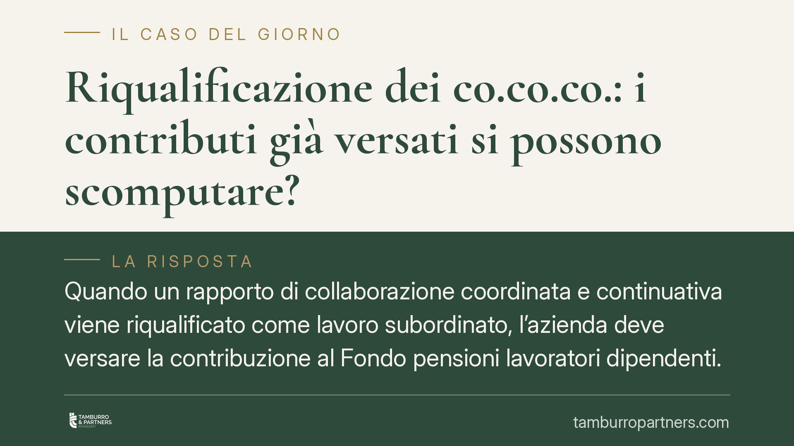

Riqualificazione dei co.co.co.: i contributi già versati si possono scomputare?
Quando un rapporto di collaborazione coordinata e continuativa viene riqualificato come lavoro subordinato, l'azienda deve versare la contribuzione al Fondo pensioni lavoratori dipendenti. Resta aperta una questione delicata: i contributi già versati alla gestione separata INPS possono essere scomputati da quanto dovuto? La risposta incide in modo pesante sull'esposizione economica del datore di lavoro.

Il caso
La vicenda riguarda un'azienda operante nel settore dei call center outbound e alcuni collaboratori il cui rapporto, inizialmente inquadrato come collaborazione, è stato riqualificato come lavoro subordinato in sede giudiziale. La controversia, passata per la Corte d'appello di Genova, ha riportato all'attenzione un nodo ricorrente: che fine fanno i contributi versati alla gestione separata INPS quando il rapporto viene ricondotto alla subordinazione, con conseguente obbligo di contribuzione al Fondo pensioni lavoratori dipendenti (Fpld)?
Una precisazione terminologica è doverosa. Il "lavoro a progetto" (art. 61 e seguenti del D.Lgs. 276/2003) è stato abrogato dal D.Lgs. 81/2015 per i rapporti instaurati successivamente. Oggi la riqualificazione dei rapporti di collaborazione si fonda soprattutto sull'art. 2 del D.Lgs. 81/2015, relativo alle collaborazioni cosiddette *eterorganizzate*, cioè quelle in cui il committente organizza anche tempi e luogo della prestazione. Il riferimento al progetto va quindi letto come contesto storico della singola vicenda, non come disciplina applicabile ai rapporti attuali.
Inquadramento normativo
La gestione separata è stata istituita dall'art. 2, comma 26, della L. 335/1995 ed è la gestione previdenziale in cui confluiscono, tra gli altri, i contributi dei collaboratori coordinati e continuativi. Il Fpld è invece la gestione dei lavoratori dipendenti. Si tratta di due gestioni distinte, con aliquote e logiche diverse.
Da qui il problema. In caso di riqualificazione, l'orientamento prevalente della Corte di Cassazione, Sezione Lavoro, tende a riconoscere forme di scomputo o neutralizzazione di quanto già versato, per evitare che lo stesso periodo lavorativo generi una duplicazione contributiva a carico del datore. Questa impostazione si collega al principio di automaticità delle prestazioni e all'esigenza di coerenza del sistema previdenziale.
Esiste tuttavia un filone più rigoroso, invocato dall'INPS, secondo cui le due gestioni non comunicano: i contributi versati alla gestione separata non si compenserebbero automaticamente con quelli dovuti al Fpld. In questa lettura il datore dovrebbe versare l'intero dovuto e recuperare separatamente l'indebito versato alla gestione separata, con il rischio di una *reviviscenza* delle sanzioni civili sull'omissione contributiva.
È bene essere chiari: si tratta di un tema controverso. L'affermazione di un "doppio binario" puro, con debito pieno verso il Fpld e nessuno scomputo, non può essere presentata come diritto vivente consolidato. Chi affronta un contenzioso deve verificare lo stato aggiornato della giurisprudenza e il singolo provvedimento rilevante, controllandone numero, anno e sezione sulle fonti ufficiali.
Il profilo sanzionatorio
L'aspetto più oneroso riguarda le sanzioni civili. L'art. 116, comma 8, della L. 388/2000 distingue tra omissione contributiva (lett. a) ed evasione contributiva (lett. b), con regimi sanzionatori diversi e più gravi in caso di evasione. Se la riqualificazione facesse rivivere integralmente le sanzioni sull'importo dovuto al Fpld, l'esposizione dell'azienda potrebbe aumentare in modo significativo rispetto alla sola differenza contributiva. Anche su questo punto la qualificazione — omissione o evasione — è decisiva e va contestata nel merito.
Implicazioni pratiche per l'azienda
Per il datore di lavoro il messaggio è prudenziale: una riqualificazione non si risolve necessariamente in una semplice "partita di giro" contributiva. Nel peggiore degli scenari, l'importo dovuto al Fpld va calcolato per intero, i contributi versati alla gestione separata vanno recuperati con un'azione autonoma di ripetizione dell'indebito ex art. 2033 c.c., e su tale credito può maturare la prescrizione. Occorre quindi monitorare i termini per non vedere svanire il diritto al rimborso.
Cosa fare in concreto
- Mappare i rapporti di collaborazione in essere e verificarne la tenuta rispetto all'art. 2 del D.Lgs. 81/2015 sull'eterorganizzazione, prima che intervenga un accertamento.
- Conservare con cura la documentazione dei versamenti alla gestione separata: sono la base per un'eventuale azione di ripetizione.
- In caso di riqualificazione o avviso di addebito, valutare subito l'esistenza del credito restitutorio e i termini di prescrizione, attivando l'azione ex art. 2033 c.c. senza attendere.
- Contestare nel merito la qualificazione dell'omissione come evasione (art. 116, comma 8, lett. b, L. 388/2000), che comporta sanzioni più gravose.
- Non dare per scontato il doppio binario: verificare l'orientamento aggiornato della Cassazione e il provvedimento specifico su fonti ufficiali.
Conclusione
La partita della riqualificazione si gioca tanto sulla natura del rapporto quanto sul trattamento dei contributi già versati. Finché la giurisprudenza resta non unanime, la strategia difensiva deve tenere aperte entrambe le linee: contestare la qualificazione del rapporto e, in subordine, presidiare lo scomputo o il recupero dell'indebito contributivo.
Contributo informativo a cura di Tamburro & Partners. Non costituisce parere legale.
Ogni storia di lavoro ha i suoi tempi.
Se gestisci HR e vuoi un confronto su contenzioso, ispezioni o licenziamenti, scrivi allo studio. Ti rispondiamo entro un giorno lavorativo.